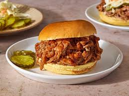

Pulled Pork

Description
Pulled pork topped with your BBQ sauce, it's sure to bring rave reviews.
Ingredients
- 1 (2 pound) pork tenderloin
- 1 (2 pound) pork tenderloin
- 18 ounce bottle your favorite barbecue sauce
- 8 hamburger buns, split and lightly toasted
Steps
- Gather all the ingredients
- Place pork tenderloin in a slow cooker; pour root beer over top.
- Cover and cook on Low until pork shreds easily, 6 to 7 hours. Note: the actual length of time may vary according to the individual slow cooker.
- Drain well. Stir in barbecue sauce.
- Serve on hamburger buns.